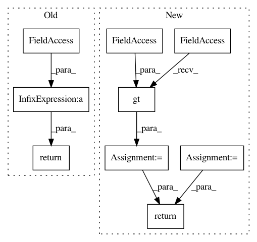

8a70c277c355fe734a01fe58baafdc2dc5164205,OpenNMT/train.py,,eval,#Any#Any#Any#,122
Before Change
loss = criterion.forward(outputs, tgt)
model.train()
return math.exp(loss / data.len)
def trainModel(model, trainData, validData, dataset):
print(model)
After Change
for i in range(len(data)):
batch = data[i]
outputs = model(batch)
loss = criterion(outputs, batch[1])
total_loss += loss.data[0]
total_words += batch[1].data.gt(onmt.Constants.EOS).sum()
model.train()
return total_loss / total_words
def trainModel(model, trainData, validData, dataset):
print(model)
In pattern: SUPERPATTERN
Frequency: 3
Non-data size: 9
Instances
Project Name: OpenNMT/OpenNMT-py
Commit Name: 8a70c277c355fe734a01fe58baafdc2dc5164205
Time: 2016-12-29
Author: alerer@fb.com
File Name: OpenNMT/train.py
Class Name:
Method Name: eval
Project Name: NeuromorphicProcessorProject/snn_toolbox
Commit Name: c570664aadb7cd1a3b32d2c6842e88e42150e18e
Time: 2017-05-05
Author: bodo.rueckauer@gmail.com
File Name: snntoolbox/core/inisim.py
Class Name:
Method Name: get_new_mem